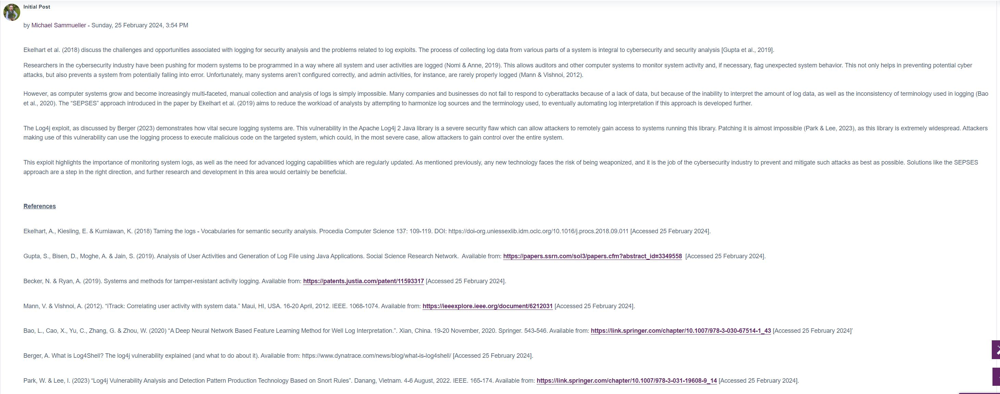
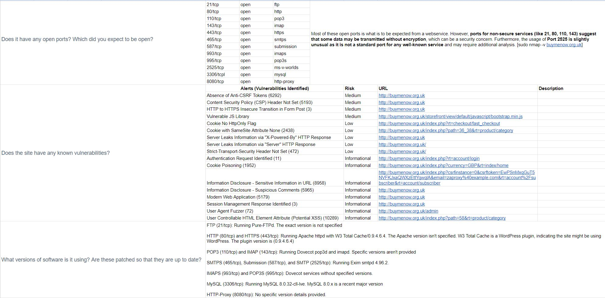

Unit 4: Artefacts
Discussion Forum
Part of this unit's discussion forum was to write a post about the following topic:
Read Berger (2021) and Ekelhart et al (2019) and then post your thoughts on the issues of logging for security analysis versus the issues of log-related exploits. You should support your arguments with appropriate academic references.
Unit 4 Scanning Activity
Perform scans against your assigned website(s) using the tools available in Kali Linux. Answer as many of the following questions as you can:
- What Operating System does the website utilise?
- What web server software is running?
- Is it running a CMS (Wordpress, Drupal, etc?)
- What protection does it have (CDN, Proxy, Firewall?)
- Where is it hosted?
- Does it have any open ports? Which did you expect to be open?
- Does the site have any known vulnerabilites?
- What verions of software is it using? Are these patched so that they are up to date? 